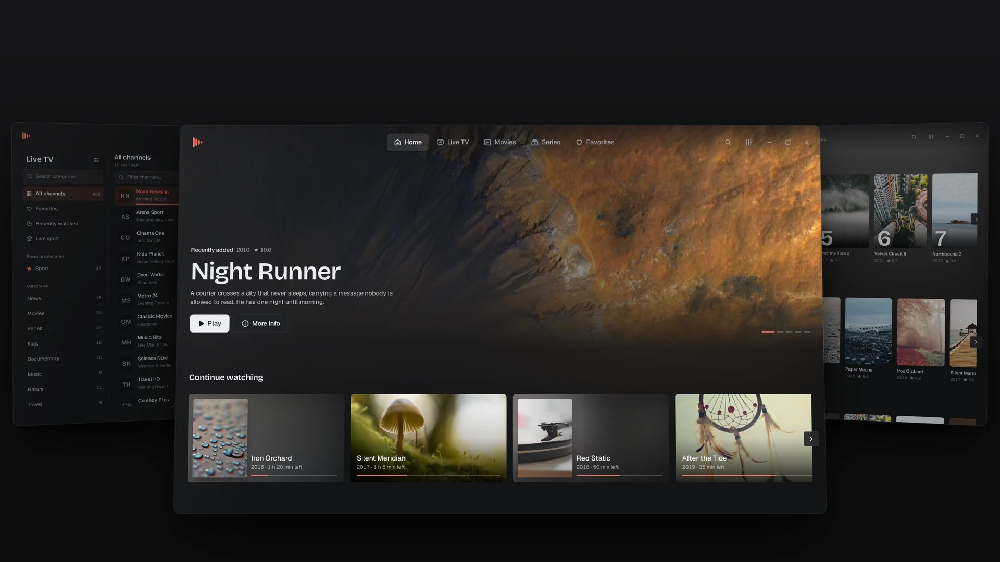
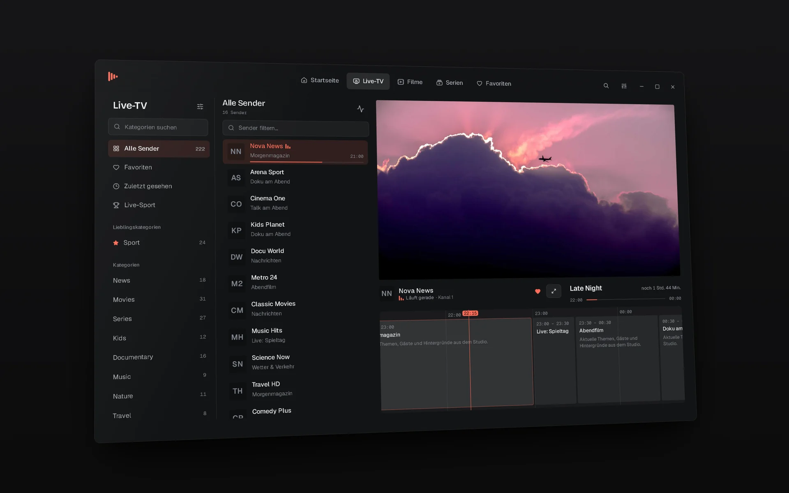

IPTV-Player für Windows 10 und 11
Dein Fernsehabend auf Windows
Live-TV mit TV-Programm, Filme und Serien aus deinem eigenen Xtream- oder M3U-Abo. Kostenlos, ohne Werbung, in sechs Sprachen.

Alles für Live-TV, Filme und Serien
Live-TV
Kategorien, eine schnelle Senderliste und die Live-Vorschau. Versionen eines Senders (HD, FHD …) werden zusammengefasst.
TV-Programm
Das Tagesprogramm als Zeitleiste unter jedem Sender, von deinem Anbieter oder aus einer XMLTV-Datei.
Filme und Serien
Poster, Handlung, Besetzung und Trailer, Staffeln und Folgen, die Top 10 der Woche und die neuesten Titel.
Live-Sport
Spielstände der großen Ligen, verknüpft mit den Sendern aus deinem Abo, die das Spiel zeigen.
Wiedergabe mit mpv
Hardware-Decodierung, Tonspuren, Untertitel, Wiedergabegeschwindigkeit und Stream-Infos. Abgebrochene Live-Streams verbinden sich neu.
Weiterschauen und Suche
Filme und Folgen laufen dort weiter, wo du aufgehört hast. Eine Suche (Strg + F) für Sender, Filme und Serien.
Tastatur und Fernbedienung
Steuerung mit den Pfeiltasten, eigene Tastenkürzel und eine Oberfläche bis Fernsehgröße, für den PC am Fernseher.
Sicher und aktuell
Zugangsdaten liegen in der Windows-Anmeldeinformationsverwaltung. Abo-Laufzeit im Blick, Updates mit einem Klick.
Schau es dir an

In einer Minute startklar
Herunterladen
Lade die neueste setup.exe von der Release-Seite auf GitHub.
Installieren
Doppelklick auf die Datei. Administratorrechte sind nicht nötig.
Anbieter hinzufügen
Xtream-Zugang oder M3U-Link eintragen. Sonora lädt Sender, Filme und Serien.
Zeigt Windows „Der Computer wurde durch Windows geschützt“, klicke auf „Weitere Informationen“ und dann auf „Trotzdem ausführen“. Das erscheint, weil die App neu und noch nicht signiert ist.
So richtest du Sonora IPTV ein
Du brauchst nur die Zugangsdaten deines IPTV-Anbieters.
Mit Benutzername und Passwort (Xtream Codes)
- Beim ersten Start oder unter Einstellungen → Anbieter den Typ Xtream Codes wählen.
- Server-URL, Benutzername und Passwort eintragen.
- Verbindung testen, dann Speichern.
Mit einer Playlist (M3U / M3U8)
- M3U-/M3U8-Playlist wählen.
- Playlist-Link einfügen oder eine Datei auswählen.
- Optional einen Programmführer (XMLTV) angeben, dann Speichern.
Tastenkürzel im Player
| LeertasteK | Wiedergabe / Pause |
| F | Vollbild |
| M | Ton aus / an |
| ↑↓ | Lautstärke |
| ←→ | 10 Sekunden zurück / vor |
| Bild ↑Bild ↓ | Vorheriger / nächster Sender |
| [] | Langsamer / schneller |
| I | Stream-Infos |
| Esc | Vollbild verlassen |
Tipps für ein ruhiges Bild
- Stream ruckelt: unter Einstellungen → Live-TV das Format auf HLS stellen oder den Netzwerkpuffer erhöhen.
- Bild bleibt schwarz: unter Einstellungen → Wiedergabe die Videoausgabe auf Separates Fenster stellen.
- Bildfehler: Hardware-Decodierung ausschalten.
- Alle Tastenkürzel lassen sich unter Einstellungen → Tastenkürzel ändern.
Läuft auf fast jedem Windows-PC
Häufige Fragen
Bekomme ich mit Sonora IPTV Sender, Filme oder Serien?
Nein. Sonora IPTV ist ein reiner Player und enthält keine Inhalte. Du brauchst ein eigenes, legales Abo bei einem IPTV-Anbieter (Xtream Codes oder M3U-Playlist).
Kostet Sonora IPTV etwas?
Nein. Download und Nutzung sind kostenlos und ohne Werbung.
Wie bekomme ich Updates?
Sonora IPTV prüft beim Start, ob es eine neue Version gibt, und installiert sie mit einem Klick. Du kannst auch unter Einstellungen → Updates nachsehen.
Sind meine Zugangsdaten sicher?
Ja. Passwörter und Playlist-Adressen liegen in der Windows-Anmeldeinformationsverwaltung, nicht in der App-Datenbank oder in Protokolldateien, und gehen nur an deinen eigenen Anbieter.
Kann ich mehrere Anbieter nutzen?
Ja. Du kannst beliebig viele hinzufügen und im Anbieter-Menü oben rechts zwischen ihnen wechseln.
Das Video bleibt schwarz. Was tun?
Stelle unter Einstellungen → Wiedergabe die Videoausgabe auf „Separates Fenster“. Manche Grafiktreiber vertragen die eingebettete Wiedergabe nicht. Hilft das nicht, prüfe, ob der Stream bei deinem Anbieter erreichbar ist.
Gibt es Sonora IPTV für Mac, Android oder Smart-TV?
Aktuell gibt es Sonora IPTV nur für Windows.
Wie deinstalliere ich Sonora IPTV?
Windows-Einstellungen → Apps → Installierte Apps → Sonora IPTV → Deinstallieren.